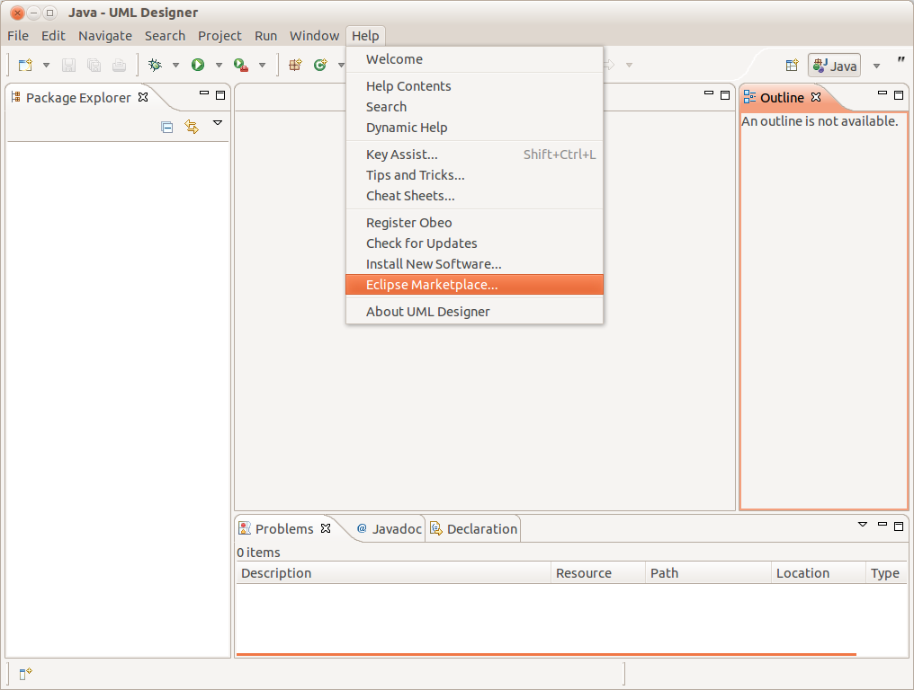
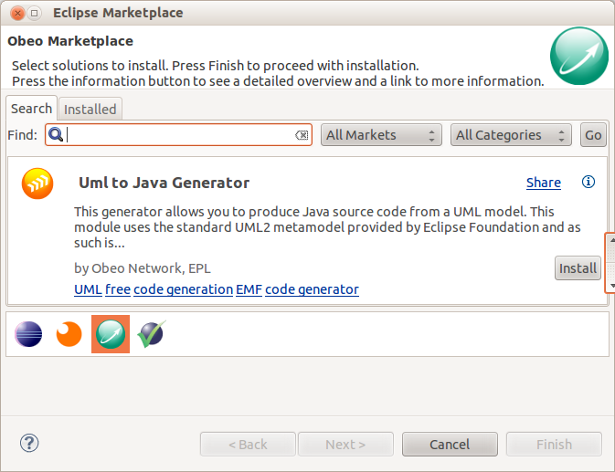

UML to Java generator
How to install ?
From Eclipse, go to the Help menu and select Eclipse Marketplace.

Then select the Obeo maketplace and search the UML to Java generator. Finally, click on the Install button.

Documentation
- The full documentation is available on the Obeo Network